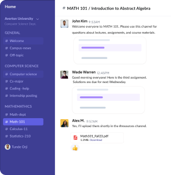
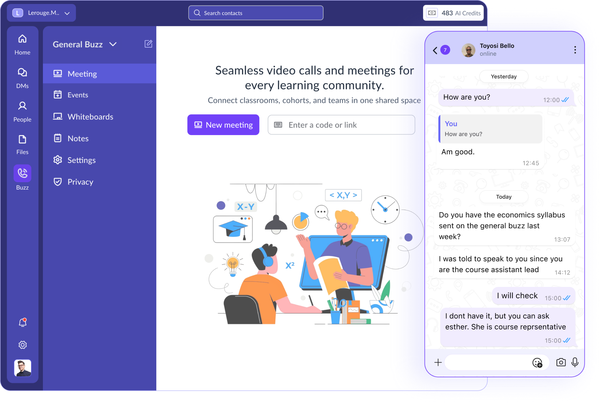
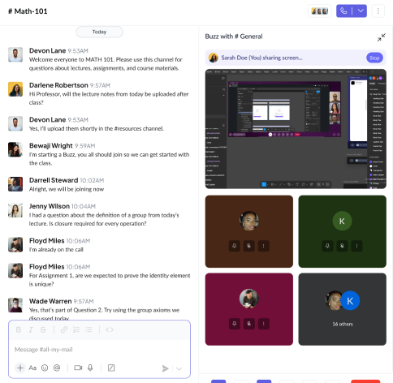
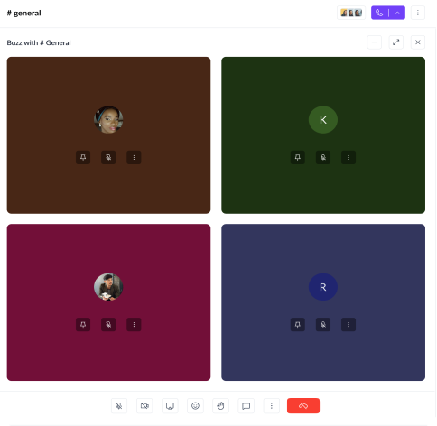
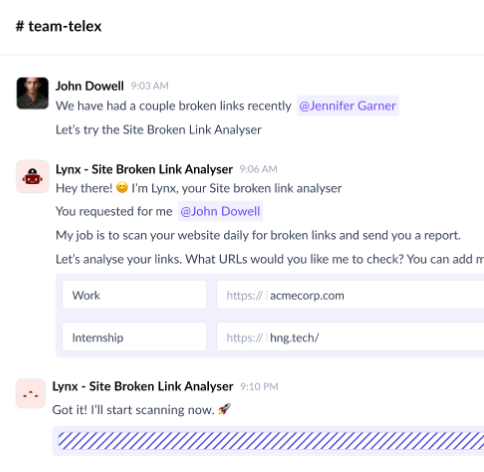

01 / STAY ORGANIZED
Organized Channels
Create subject-based spaces for every cohort. Keep discussions focused, announcements clear, and conversations threaded so nothing gets lost.
Bring learners and educators together with organized conversations, seamless cohort collaboration, and affordable communication tools built for learning communities.

ONE WORKSPACE FOR THE PEOPLE WHO MAKE LEARNING HAPPEN
From organized channels to AI-powered agents, Zedu brings communication, collaboration, and automation into one seamless workspace.
Get started for free →
Create subject-based spaces for every cohort. Keep discussions focused, announcements clear, and conversations threaded so nothing gets lost.

Manage bootcamps, classes, and learning groups with clearly defined communication spaces. Keep educators aligned and learners informed.

Work across languages, time zones, and regions with chats, docs, and meetings in one place.

Deploy intelligent assistants that automate routine tasks, support learners instantly, and keep educators focused on teaching.
Replace scattered apps with one structured platform for communication, collaboration, and AI-powered education.
Start your cohort ↗faster cohort coordination
Less searching, more progress.less admin workload
Give educators their time back.AI learner support
Helpful answers whenever curiosity strikes.Replace disconnected learning tools with one seamless platform.
All the little things that make a big difference, working together in one place.
Secure, encrypted-in-transit messaging for academic collaboration.
Your digital classroom for structured discussions and real-time collaboration.
Turn learning into visual journeys that make complex concepts memorable.
Revisit lessons and reinforce learning whenever you need.
An interconnected space where dialogue builds shared knowledge.
Organize, share, and quickly access your learning resources.
Sketch, brainstorm, and ideate together on a shared canvas.
Make complex topics clearer with practical AI learning support.
Whether you are managing a small learning cohort or an entire campus, Zedu grows with you.
Keep learners accountable from onboarding to graduation.
Read more →Coordinate departments, faculty, and students in one workspace.
Read more →Give every class a focused place to learn and collaborate.
Read more →Start free and grow when you're ready. No per-student surprises.
Great for educators just getting started with Zedu.
Everything you need to run a structured bootcamp.
Flexible pricing for universities and large programs.
Built specifically for structured learning environments — not corporate teams or casual group chats.
See what makes us different →Designed around cohorts, classrooms, and structured learning.
Grow your cohorts without worrying about per-user fees.
Automate reminders and help learners instantly.
Every cohort deserves a focused space. Zedu gives educators the tools to organize, guide, and support each learner with confidence.
Need clarity? Find practical answers to help you move forward with confidence.
Zedu is a communication and collaboration platform built for bootcamps, schools, and learning communities.
Organized channels, live teaching tools, shared resources, and AI support help learners stay connected and find what they need.
Zedu gives you a structured workspace to get your cohorts and teaching teams organized.
AI features can help provide relevant support from an institution's learning materials.
AI can help with routine questions while educators stay in control of the learning experience.
Choose Starter, Pro, or contact the team for flexible institution pricing.
Join educators building better learning experiences, one cohort at a time.